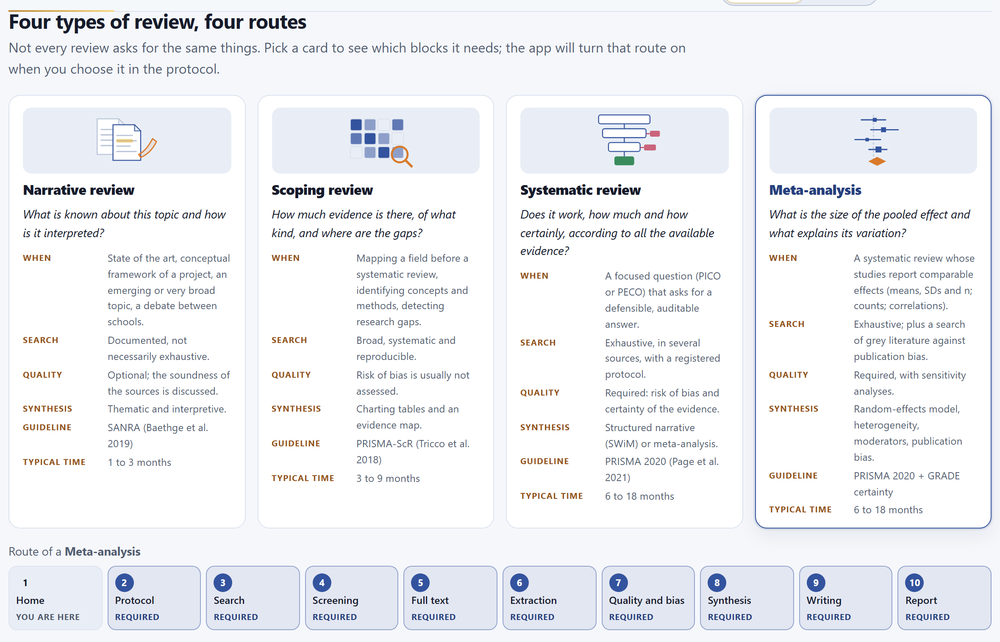
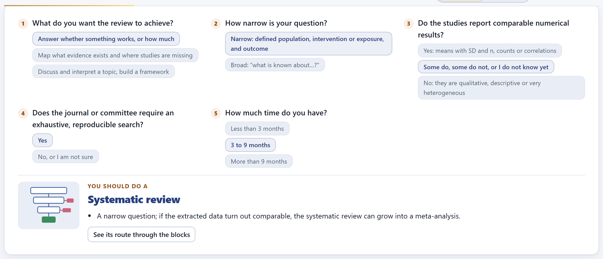
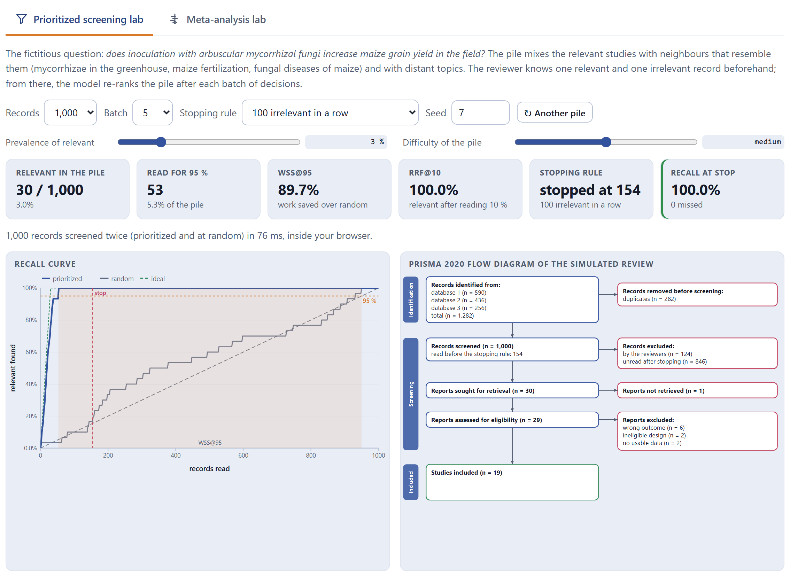
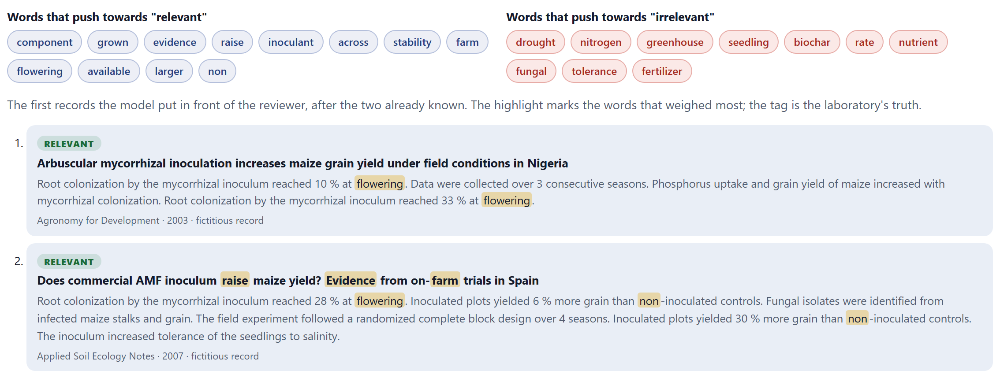
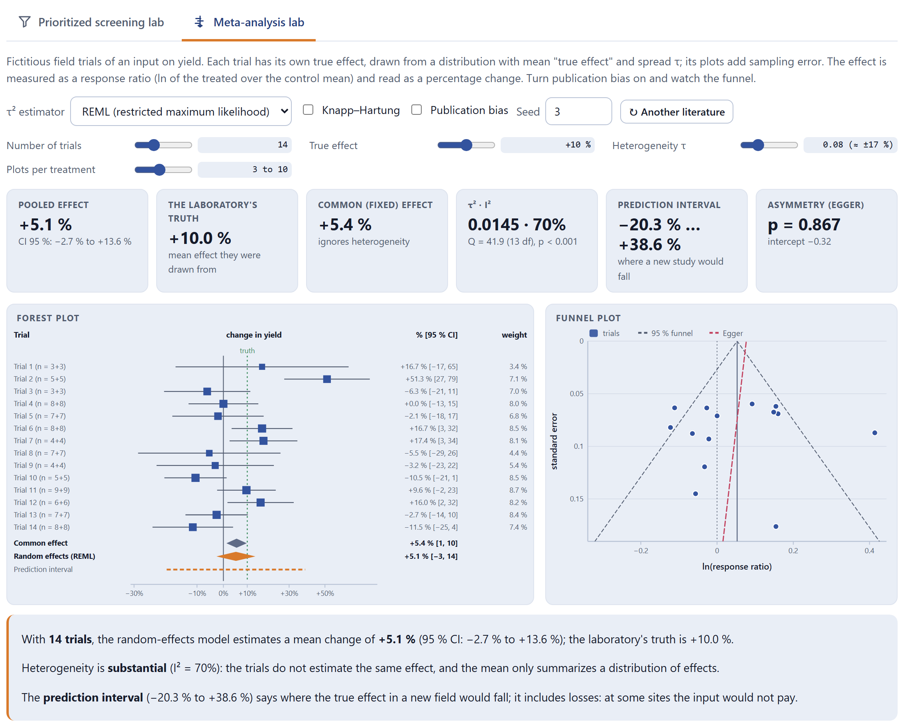

The home page is not decoration: it helps you choose the type of review, shows which blocks each one asks for and carries two labs that use the same engines as Blocks 4 and 8 on fictitious literatures whose truth they know. They serve to understand, before risking your own review, what prioritized screening saves and what stopping costs, and how far a meta-analysis can land from the truth.
The app always opens on the home page (Figure I.1 of the introduction). Below the title there are five buttons that lead where you almost always want to go first.
| Button | Where it leads |
|---|---|
| Start my review → | To Block 2, to the protocol that is open (or to a new one of the type chosen on the home page). |
| Which type of review suits me? | To the cards of the four types and the five-question assistant (Sections 1.2 and 1.3). |
| Try the labs | To the two labs (Sections 1.4 and 1.5). |
| Open the complete example | Loads the manual’s example project and goes to Block 2 (Section I.7). |
| How to cite | To the citation of the program (Section 1.7). |
The four tags below sum up the program’s commitments: it runs entirely in the browser, the records never leave the computer, it is in Spanish and English, and it follows PRISMA 2020 and PRISMA-ScR. The fifth says that the meta-analysis engine was checked against published examples: the BCG vaccine data set (Colditz et al. 1994) reproduces τ² = 0.3132 and μ̂ = −0.7145 with REML, the reference values in the literature.

Each card sums up the type in seven lines: its typical question, when it suits, what the search is like, what happens with the quality of the studies, how it is synthesized, which reporting guideline it follows and how long it usually takes. When you pick a card, the band below shows its route: each block marked as required, optional or not applicable.
The card chosen on the home page is only a preference: it is used as the type of a new protocol. The type that rules is the one set in Block 2›1 · Type of review, and on it depend the question framework, the manuscript skeleton, the checklist of Block 9 and the project status of Block 10. All blocks stay open whatever the type: a narrative review can use the screening of Block 4 if it suits it.
The five questions are: what you want the review to achieve, how narrow the question is, whether the studies report comparable numerical results, whether the journal or committee requires an exhaustive, reproducible search, and how much time you have. With all five answered, the assistant proposes a type and lists its reasons, so that you can disagree knowing why. The See its route through the blocks button picks that card and scrolls down to its route.
| If you want to map what evidence exists | then scoping: mapping is not estimating an effect. |
| If you want to discuss and interpret a topic | then narrative; scoping if you are also required to do a reproducible search. |
| If you want to answer whether something works, but the question is broad | then scoping first: a broad question is not answered with a number. |
| If the question is narrow and the effects are comparable | then meta-analysis. |
| If the question is narrow and you do not yet know whether the data will be comparable, or they are not | then systematic, which can grow into a meta-analysis at extraction or stay as a structured narrative synthesis. |
| If you have less than three months for a systematic review | then the assistant warns you: narrow the question or the sources and declare it as a limitation. |

The lab writes a pile of fictitious records on one question—does inoculation with mycorrhizae increase maize yield in the field?—and knows which ones are relevant. It mixes the relevant ones with neighbors that resemble them (mycorrhizae in the greenhouse, maize fertilization, fungal diseases) and with distant topics. The simulated reviewer knows one relevant and one irrelevant record beforehand; from there, the same model that Block 4 uses re-ranks the pile after each batch of decisions, and the lab also screens the same pile in random order for comparison.

| Control | What it changes |
|---|---|
| Records | The size of the pile: 500, 1,000 or 2,000. |
| Batch | How many decisions are made before the model re-ranks (1, 5, 10 or 25). Small batches learn faster. |
| Stopping rule | 50, 100 or 200 irrelevant in a row; the knee of the curve with ρ ≥ 6; or the adjusted knee, with ρ ≥ 156 − relevant found (Cormack and Grossman 2016). |
| Prevalence of relevant | What fraction of the pile is relevant (3% at the start). Real reviews usually run between 1 and 5%. |
| Difficulty of the pile | How much the neighbors resemble the relevant records: easy, medium or hard. |
| Seed · ↻ Another pile | The same seed gives the same pile; the button draws another. |
| Read for 95 % | How many records had to be read, in prioritized order, to find 95% of the relevant ones. |
| WSS@95 | The work saved: the fraction of the pile that is not read to reach 95% of the relevant records, minus the 5% that chance would save (Cohen et al. 2006). |
| RRF@10 | The fraction of the relevant records already found after reading the first 10% of the pile. |
| Stopping rule and Recall at stop | Where the chosen rule would have stopped and what fraction of the relevant records had been found there. The box turns red if relevant records were missed. |

Of 1,000 records, 30 are relevant (3.0%). In prioritized order, 53 readings are enough to find 95% of them (5.3% of the pile): WSS@95 = 89.7%. After reading 10% of the pile all of them had been found (RRF@10 = 100%). The rule of 100 irrelevant in a row stopped at record 154 without missing any. Raise the difficulty or lower the prevalence and repeat: you will see that the rule that was safe with this pile starts leaving relevant records behind.
The model is a naive Bayes classifier on words weighted by TF-IDF (Salton and Buckley 1988; Rennie et al. 2003), retrained with each batch: active learning in the line of the work of Yu et al. (2018) and van de Schoot et al. (2021). It excludes nothing; it only changes the order in which you see the records. Because the relevant records appear early, there comes a point where only irrelevant ones turn up, and that is where a stopping rule declared in the protocol comes in. The cost is explicit: stopping before the end can leave some relevant record out. That is why the lab shows the recall at stop, and why Block 4 recommends checking with a random sample of the unread records.
The second lab generates fictitious field trials of an input on yield. Each trial has its own true effect, drawn from a distribution with mean True effect and spread Heterogeneity τ; its plots add sampling error. The effect is measured as a response ratio (the log of the treated mean over the control mean) and read as a percentage change. The lab then combines the trials with the same engine as Block 8 and shows you the distance between the truth and the estimate.

| Control | What it changes |
|---|---|
| τ² estimator | REML (restricted maximum likelihood), DerSimonian–Laird, Paule–Mandel, Hedges or maximum likelihood: how the between-trial variance is estimated. |
| Knapp–Hartung | Intervals with the t distribution and an adjustment of the variance; more honest with few studies. |
| Publication bias | Hides the small trials that “did not work out”: the funnel loses a corner and the average inflates. |
| Number of trials, True effect, Heterogeneity τ, Plots per treatment | The literature that is generated. Next to τ its equivalent as a percentage change is shown (0.08 ≈ ±17%). |
The six indicators are the pooled effect with its 95% CI, the laboratory’s truth, the common (fixed) effect, τ² with I² and the Q test, the prediction interval and Egger’s asymmetry test. Below, a paragraph reads the result in words: with how many trials, how large the heterogeneity is and what the prediction interval says.
| If you raise τ with the same number of trials | then the CI widens a little, but the prediction interval a lot: the average stays, what changes is what will happen at a new site. |
| If you turn on publication bias | then the pooled effect rises above the truth and the funnel loses the corner of small trials with low effects. |
| If you go down to 5 trials and toggle Knapp–Hartung | then you will see how much too narrow the CI becomes with the z test: with few studies, use t. |
| If you set τ to zero | then the common effect and the random effects coincide, and I² drops toward zero. |
What’s inside describes the nine working blocks in one card each; How it is made, the six principles of the program: everything on your computer, it guides and does not write, every decision is recorded, reproducible, four types with one route, and verified engines. The theory, in plain language gathers five explanations with their illustration, meant to be read before opening the first database:
Each study weighs by its precision, reduced by τ²; I² compares τ² with the typical sampling variance s², and the prediction interval (Higgins et al. 2009) adds the uncertainty of the average and that of the sites.
The How to cite section carries the citation of the program in Spanish or English, depending on the active language, with its version number, and the Copy the citation button. If ReviewPro helped you with an article or a thesis, cite the program and the original works of the methods you used: the methods paragraph of Block 8 names them by author and year, and Block 9 adds their entries to the reference list when you cite them.
References behind the calculations gathers, by topic, the works each method comes from; Appendix E repeats them.
Block 1 hardly warns: the assistant says “N answer(s) missing to recommend a type.” until you answer all five, and the screening lab says “the rule never fired: everything was read” when the chosen stopping rule never triggers with that pile. Nothing you do here touches your project: the labs work with their own fictitious literatures.